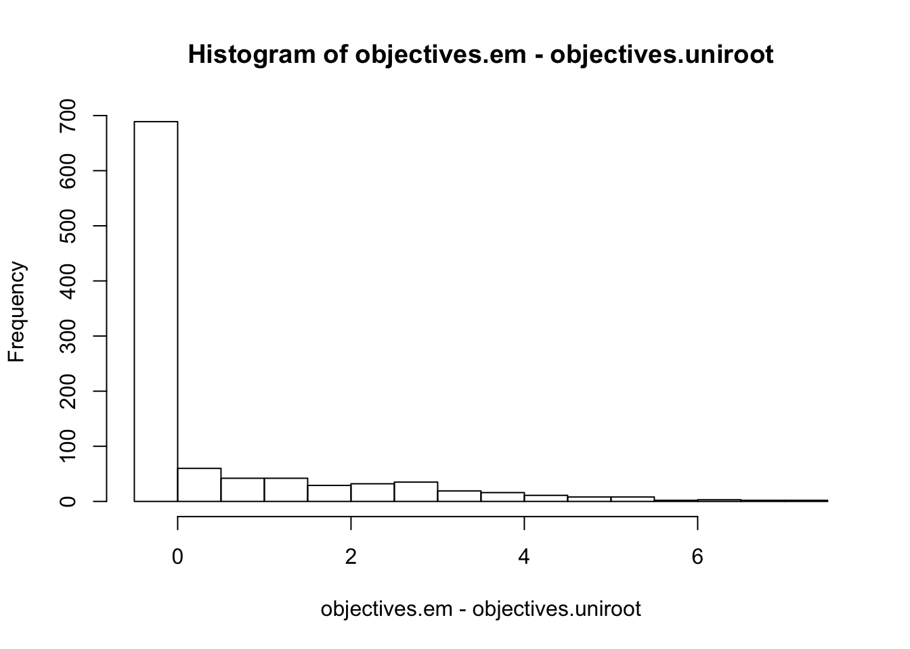
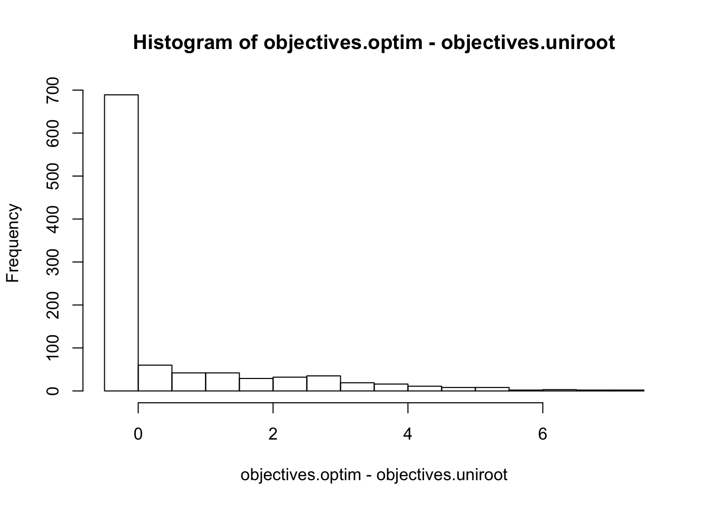
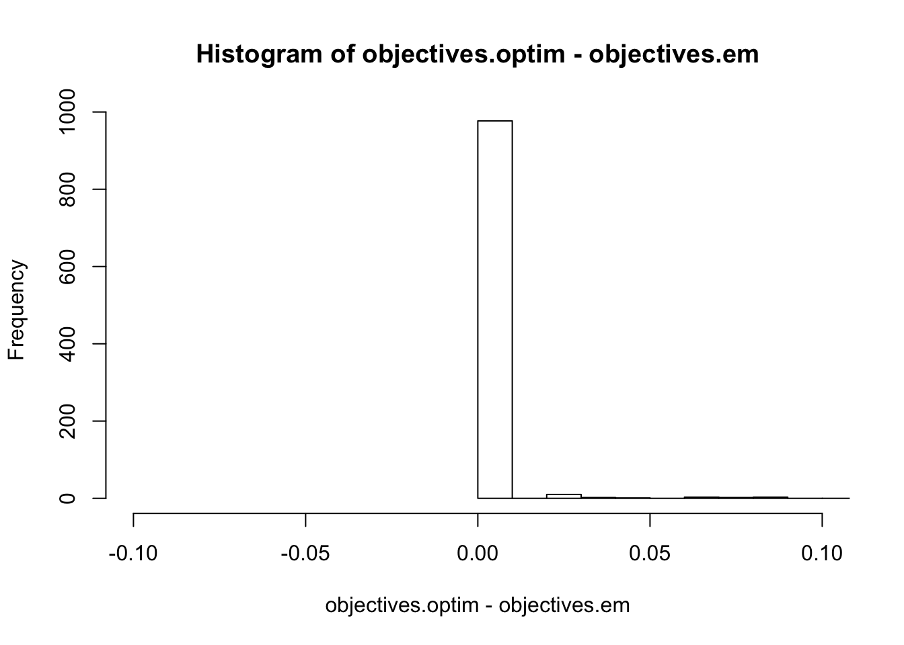
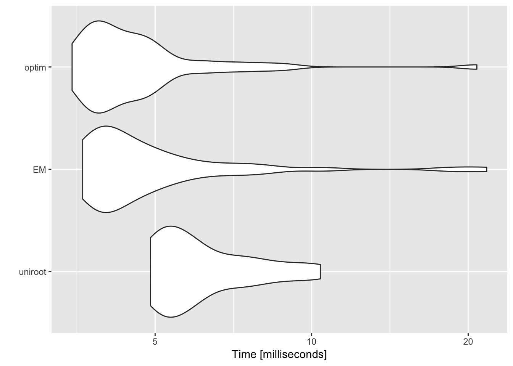

Last updated: 2019-02-14
workflowr checks: (Click a bullet for more information) ✔ R Markdown file: up-to-date
Great! Since the R Markdown file has been committed to the Git repository, you know the exact version of the code that produced these results.
✔ Environment: empty
Great job! The global environment was empty. Objects defined in the global environment can affect the analysis in your R Markdown file in unknown ways. For reproduciblity it’s best to always run the code in an empty environment.
✔ Seed:
set.seed(20190114)
The command set.seed(20190114) was run prior to running the code in the R Markdown file. Setting a seed ensures that any results that rely on randomness, e.g. subsampling or permutations, are reproducible.
✔ Session information: recorded
Great job! Recording the operating system, R version, and package versions is critical for reproducibility.
✔ Repository version: a3eab4f
wflow_publish or wflow_git_commit). workflowr only checks the R Markdown file, but you know if there are other scripts or data files that it depends on. Below is the status of the Git repository when the results were generated:
Ignored files:
Ignored: .DS_Store
Ignored: .Rhistory
Ignored: .Rproj.user/
Ignored: analysis/.DS_Store
Untracked files:
Untracked: analysis/resid.RDS
Untracked: analysis/resid.RDS.zip
Untracked: analysis/wavelet-susie-20190131.Rmd
Untracked: analysis/wavelet-susie-20190213.Rmd
Untracked: data/dsc_em_output.RDS
Untracked: figure/
Unstaged changes:
Modified: analysis/UDWT.Rmd
Deleted: analysis/UDWT2.Rmd
Modified: analysis/wavelet-susie-20190121.Rmd
Modified: analysis/wavelet-susie-20190130.Rmd
| File | Version | Author | Date | Message |
|---|---|---|---|---|
| Rmd | a3eab4f | kaiqian | 2019-02-14 | add debug analysis for comparing three v methods |
Since DSC simulation shows similar results of objectives for three methods, we consider again our previous debug example, where we have higher initial objective than fit objective. We simulate 1000 slightly different X matrices and use resid.y from our debug example. We apply SuSiE with three prior estimate methods.
Summary
We initialize SuSiE from a fit with fixed prior variance. uniroot has objective higher than initialization for only 71.3% of the time. But EM and optim both have objectives higher than initialization all the time in this example.
We compare objectives obtained from EM and optim with that from uniroot. EM objective is higher uniroot objective for only 31.1% of the time. But optim objective is higher than uniroot objective for 85.4% of the time. We also observe that optim objective is always larger than EM objective but the difference is small from “Histogram of objectives.optim - objectives.em”.
Microbenchmark shows that uniroot takes more time than the other two methods.
We simulate 1000 X matrices and use resid.y from the debug example. Then we start from an initialization with a fixed prior variance and apply three methods.
#' @param x is an n-vector of data
#' @return R an n by K interpolation matrix
create_interpolation_matrix = function(x){
n = length(x)
K = 2^(ceiling(log2(n)))
R = matrix(0, n, K)
for (i in 1:n){
for (j in 1:K){
if (j == 1 & x[i] <= 1/K){
R[i,j] = 1
} else if (j == floor(K*x[i]) & x[i] > 1/K & x[i] <=1){
R[i,j] = (j+1) - K*x[i]
} else if (j == ceiling(K*x[i]) & x[i] > 1/K & x[i] <=1){
R[i,j] = K*x[i] - (j-1)
} else R[i,j] = 0
}
}
return(R)
}n = 100
K = 2^(ceiling(log2(n)))
set.seed(1)
x = sort(runif(n, 0,1))
W <- t(GenW(n=K, filter.number=1, family="DaubExPhase"))
R = create_interpolation_matrix(x)
# tcrossprod(R,W) computes R %*% t(W)
RW_t = tcrossprod(R, W)
RW_t = RW_t[,-which(colSums(RW_t)==0)]resid.y = readRDS("/Users/Kaiqian /Desktop/wavelet/susie-np/analysis/resid.RDS")
s.fix = susie(RW_t, resid.y, L=1)n = 100
K = 2^(ceiling(log2(n)))
X.list = list()
for (i in 1:1000){
set.seed(i)
x = sort(runif(n, 0,1))
W <- t(GenW(n=K, filter.number=1, family="DaubExPhase"))
R = create_interpolation_matrix(x)
# tcrossprod(R,W) computes R %*% t(W)
RW_t = tcrossprod(R, W)
RW_t = RW_t[,-which(colSums(RW_t)==0)]
X.list[[i]] = RW_t
}s.fix.list = list()
s.uniroot.list = list()
s.em.list = list()
s.optim.list = list()
for (i in 1:1000) {
s.fix = susie(X.list[[i]], resid.y, L=1)
s.uniroot = susie(X.list[[i]], resid.y, estimate_prior_variance = TRUE, optimV_method = 'uniroot', s_init = s.fix, L=1)
s.em = susie(X.list[[i]], resid.y, estimate_prior_variance = TRUE, optimV_method = 'EM', s_init = s.fix, L=1)
s.optim = susie(X.list[[i]], resid.y, estimate_prior_variance = TRUE, optimV_method = 'optim', s_init = s.fix, L=1)
s.fix.list[[i]] = s.fix
s.uniroot.list[[i]] = s.uniroot
s.em.list[[i]] = s.em
s.optim.list[[i]] = s.optim
}objectives.fix = unlist(lapply(s.fix.list, susie_get_objective))
objectives.uniroot = unlist(lapply(s.uniroot.list, susie_get_objective))
objectives.em = unlist(lapply(s.em.list, susie_get_objective))
objectives.optim = unlist(lapply(s.optim.list, susie_get_objective))uniroot only has objective higher than the initialization for 71.3% of the time.
sum(objectives.uniroot > objectives.fix)/1000[1] 0.713The objective of EM is always higher than initialization.
sum(objectives.em > objectives.fix)/1000[1] 1The objective of optim is always higher than initialization in this simulation example.
sum(objectives.optim > objectives.fix)/1000[1] 1EM and optim are higher than that of uniroot?The objective of EM is only higher than that of uniroot for 31.1% of the time.
sum(objectives.em > objectives.uniroot)/1000[1] 0.311hist(objectives.em-objectives.uniroot)
The objective of optim is higher than that of uniroot for 85.4% of the time. But the histogram is similar as above.
sum(objectives.optim > objectives.uniroot)/1000[1] 0.854hist(objectives.optim-objectives.uniroot)
Even though the objective of optim is always higher than that of EM, the difference is relatively small.
sum(objectives.optim > objectives.em)/1000[1] 1hist(objectives.optim - objectives.em, xlim=c(-0.1,0.1))
With respect to time, optim and EM outperform uniroot.
uniroot.vs.EM.vs.optim = microbenchmark(
uniroot = susie(X.list[[i]], resid.y, estimate_prior_variance = TRUE, optimV_method = 'uniroot', s_init = s.fix),
EM = susie(X.list[[i]], resid.y, estimate_prior_variance = TRUE, optimV_method = 'EM', s_init = s.fix),
optim = susie(X.list[[i]], resid.y, estimate_prior_variance = TRUE, optimV_method = 'optim', s_init = s.fix),
times = 50
)autoplot(uniroot.vs.EM.vs.optim)Coordinate system already present. Adding new coordinate system, which will replace the existing one.
sessionInfo()R version 3.4.3 (2017-11-30)
Platform: x86_64-apple-darwin15.6.0 (64-bit)
Running under: macOS Sierra 10.12.6
Matrix products: default
BLAS: /Library/Frameworks/R.framework/Versions/3.4/Resources/lib/libRblas.0.dylib
LAPACK: /Library/Frameworks/R.framework/Versions/3.4/Resources/lib/libRlapack.dylib
locale:
[1] en_US.UTF-8/en_US.UTF-8/en_US.UTF-8/C/en_US.UTF-8/en_US.UTF-8
attached base packages:
[1] stats graphics grDevices utils datasets methods base
other attached packages:
[1] ggplot2_3.1.0 microbenchmark_1.4-6 wavethresh_4.6.8
[4] MASS_7.3-51.1 susieR_0.6.4.0438
loaded via a namespace (and not attached):
[1] Rcpp_1.0.0 bindr_0.1.1 compiler_3.4.3
[4] pillar_1.3.1 git2r_0.24.0 plyr_1.8.4
[7] workflowr_1.1.1 R.methodsS3_1.7.1 R.utils_2.7.0
[10] tools_3.4.3 digest_0.6.18 evaluate_0.12
[13] tibble_2.0.0 gtable_0.2.0 lattice_0.20-38
[16] pkgconfig_2.0.2 rlang_0.3.1 Matrix_1.2-15
[19] yaml_2.2.0 xfun_0.4 bindrcpp_0.2.2
[22] withr_2.1.2 stringr_1.3.1 dplyr_0.7.8
[25] knitr_1.21 tidyselect_0.2.5 rprojroot_1.3-2
[28] grid_3.4.3 glue_1.3.0 R6_2.3.0
[31] rmarkdown_1.11 purrr_0.2.5 magrittr_1.5
[34] whisker_0.3-2 matrixStats_0.54.0 backports_1.1.3
[37] scales_1.0.0 htmltools_0.3.6 assertthat_0.2.0
[40] colorspace_1.3-2 stringi_1.2.4 lazyeval_0.2.1
[43] munsell_0.5.0 crayon_1.3.4 R.oo_1.22.0 This reproducible R Markdown analysis was created with workflowr 1.1.1